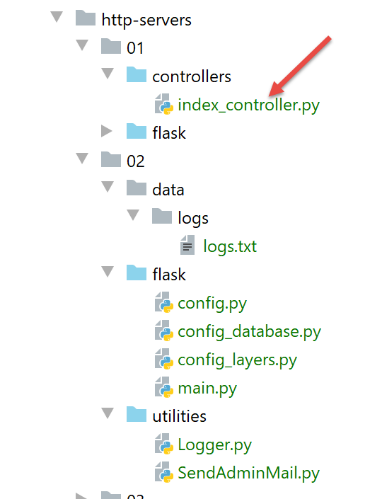
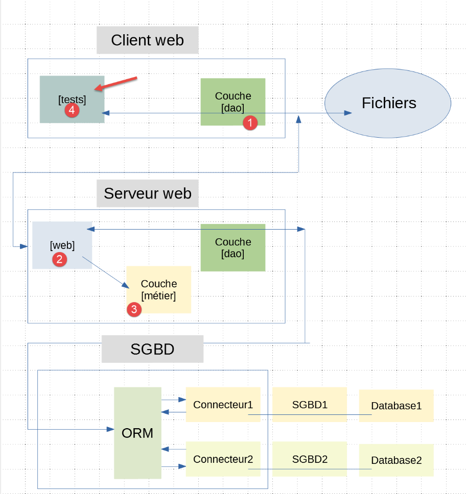

24. Exercício prático: versão 7
24.1. Introdução
A versão 7 da aplicação de cálculo de impostos é idêntica à versão 6, com as seguintes diferenças:
- o cliente web irá lançar simultaneamente várias solicitações HTTP. Na versão anterior, estas solicitações eram lançadas sequencialmente. O servidor processava, assim, apenas uma única solicitação de cada vez;
- o servidor será multithread: poderá processar várias solicitações simultaneamente;
- para acompanhar a execução destas solicitações, iremos equipar o servidor web com um registador, através do qual iremos registar num ficheiro de texto os momentos importantes do processamento das solicitações;
- o servidor enviará um e-mail ao administrador da aplicação sempre que encontrar um problema que o impeça de iniciar, normalmente um problema com a base de dados associada ao servidor web;
A arquitetura da aplicação não se altera:
A estrutura dos scripts é a seguinte:

A pasta [http-servers/02] é obtida, em primeiro lugar, através da cópia da pasta [http-servers/01]. Em seguida, são feitas alterações nessa pasta.
24.2. Os utilitários

24.2.1. A classe [Logger]
A classe [Logger] permite registar num ficheiro de texto determinadas ações do servidor web:
import codecs
import threading
from datetime import date, datetime
from threading import current_thread
from ImpôtsError import ImpôtsError
class Logger:
# atributo de classe
verrou = threading.RLock()
# construtor
def __init__(self, logs_filename: str):
try:
# abrir o ficheiro no modo de adição (a)
self.__resource = codecs.open(logs_filename, "a", "utf-8")
except BaseException as erreur:
raise ImpôtsError(18, f"{erreur}")
# gravação de um registo
def write(self, message: str):
# data/hora atual
today = date.today()
now = datetime.time(datetime.now())
# nome do thread
thread_name = current_thread().name
# não se quer ser interrompido enquanto se escreve no ficheiro de registo
# solicita-se o objeto de sincronização (= o bloqueio) da classe — apenas um thread o obterá
Logger.verrou.acquire()
try:
# gravação do registo
self.__resource.write(f"{today} {now}, {thread_name} : {message}")
# gravação imediata — caso contrário, o texto só será gravado quando o fluxo de escrita for fechado
# ou pretende-se acompanhar os registos ao longo do tempo
self.__resource.flush()
finally:
# liberamos o objeto de sincronização (= o bloqueio) para que outro thread possa obtê-lo
Logger.verrou.release()
# libertação dos recursos
def close(self):
# fecho do ficheiro
if self.__resource:
self.__resource.close()
- linhas 10-11: define-se um atributo de classe. Um atributo de classe é uma propriedade partilhada por todas as instâncias da classe. É referenciado através da notação [Classe.attribut_de_classe] (linhas 30, 39). O atributo de classe [verrou] servirá de objeto de sincronização para todos os threads que executam o código das linhas 31-36;
- linhas 14-19: o construtor recebe o nome absoluto do ficheiro de registos. Este ficheiro é então aberto e o descritor de ficheiro obtido é armazenado na classe;
- linha 17: o ficheiro de registos é aberto no modo «append» (a). Cada linha escrita será adicionada ao final do ficheiro;
- linhas 22-39: o método [write] permite escrever no ficheiro de registos uma mensagem passada como parâmetro. A esta são anexadas duas informações:
- linha 24: a data do dia;
- linha 25: a hora atual;
- linha 27: o nome do thread que está a escrever o registo. Não se deve esquecer que uma aplicação web atende vários utilizadores ao mesmo tempo. A cada pedido é atribuído um thread para a sua execução. Se esse thread for colocado em pausa, normalmente para uma operação de entrada/saída (rede, ficheiros, base de dados), o processador será atribuído a outro thread. Devido a estas possíveis interrupções, não é possível ter a certeza de que um thread conseguirá escrever uma linha no ficheiro de registos sem ser interrompido. Existe, portanto, o risco de os registos de dois threads diferentes se misturarem. O risco é baixo, talvez até nulo, mas decidimos, mesmo assim, mostrar como sincronizar o acesso de dois threads a um recurso comum, neste caso, o ficheiro de registos;
- linha 30: antes de escrever, o thread solicita a chave da porta de entrada. A chave solicitada é a criada na linha 11. É efetivamente única: um atributo de classe é único para todas as instâncias da classe;
- no momento T1, um thread Thread1 obtém a chave. Pode então executar a linha 33;
- no momento T2, o thread Thread1 é colocado em pausa antes mesmo de ter terminado de escrever o registo;
- No momento T3, o thread Thread2, que obteve o processador, também tem de escrever um registo. Chega assim à linha 30, onde solicita a chave da porta de entrada. Recebe a resposta de que outro thread já a possui. É então automaticamente colocado em pausa. O mesmo acontecerá com todos os threads que solicitarem essa chave;
- no momento T4, o thread Thread1, que tinha sido colocado em pausa, recupera o processador. Conclui então a gravação do registo;
- linhas 32-36: a gravação no ficheiro de registos é feita em duas etapas:
- linha 33: o descritor de ficheiro obtido na linha 17 funciona com um buffer. A operação [write] da linha 33 escreve nesse buffer, mas não diretamente no ficheiro. O buffer é depois esvaziado para o ficheiro em determinadas condições:
- o buffer está cheio;
- o descritor de ficheiro é alvo de uma operação [close] ou [flush];
- linha 36: força-se a gravação da linha de registo no ficheiro. Fazemos isto porque queremos ver os registos das diferentes threads intercalados entre si. Se não o fizermos, os registos de uma thread serão todos gravados ao mesmo tempo aquando do encerramento do descritor, linha 45. Seria então muito mais difícil perceber que certas threads foram interrompidas: seria necessário verificar as horas nos registos;
- linha 39: o thread Thread1 devolve a chave que lhe tinha sido atribuída. Esta poderá ser atribuída a outro thread;
- linha 22: o método [write] está, portanto, sincronizado: apenas um thread de cada vez escreve no ficheiro de registos. A chave do mecanismo está na linha 30: aconteça o que acontecer, apenas um thread obtém a chave para avançar para a linha seguinte. Este mantém-na enquanto não a devolver (linha 39);
- linhas 41-45: o método [close] permite libertar os recursos atribuídos ao descritor do ficheiro de registos;
Os registos gravados no ficheiro de registos terão o seguinte aspeto:
24.2.2. A classe [SendAdminMail]
A classe [SendAminMail] permite enviar uma mensagem ao administrador da aplicação quando esta «falha».

A classe [SendAdminMail] está configurada no script [config] [2] da seguinte forma:
# configuração do servidor SMTP
"adminMail": {
# servidor SMTP
"smtp-server": "localhost",
# porta do servidor SMTP
"smtp-port": "25",
# administrador
"from": "guest@localhost.com",
"to": "guest@localhost.com",
# assunto do e-mail
"subject": "plantage du serveur de calcul d'impôts",
# tls definido como True se o servidor SMTP exigir autenticação, e como False caso contrário
"tls": False
}
A classe [SendAdminMail] recebe o dicionário das linhas 2 a 13, bem como a configuração do envio do e-mail. A classe é a seguinte:
# importações
import smtplib
from email.mime.text import MIMEText
from email.utils import formatdate
class SendAdminMail:
# -----------------------------------------------------------------------
@staticmethod
def send(config: dict, message: str, verbose: bool = False):
# envia mensagem para o servidor SMTP config['smtp-server'] na porta config[smtp-port]
# se config['tls'] for verdadeiro, será utilizado o suporte TLS
# o e-mail é enviado em nome de config['from']
# para o destinatário config['to']
# a mensagem tem como assunto config['subject']
# encontra-se a referência de um logger em config['logger']
# recupera-se o logger na configuração — pode ser igual a None
logger = config["logger"]
# servidor SMTP
server = None
# envia-se a mensagem
try:
# o servidor SMTP
server = smtplib.SMTP(config["smtp-server"])
# modo detalhado
server.set_debuglevel(verbose)
# ligação segura?
if config['tls']:
# início do diálogo de segurança
server.starttls()
# autenticação
server.login(config["user"], config["password"])
# criação de uma mensagem Multipart — é esta mensagem que será enviada
msg = MIMEText(message)
msg['From'] = config["from"]
msg['To'] = config["to"]
msg['Date'] = formatdate(localtime=True)
msg['Subject'] = config["subject"]
# envio da mensagem
server.send_message(msg)
# registo — o registo pode não existir
if logger:
logger.write(f"[SendAdminMail] Message envoyé à [{config['to']}] : [{message}]\n")
except BaseException as erreur:
# registo — o registo pode não existir
if logger:
logger.write(
f"[SendAdminMail] Erreur [{erreur}] lors de l'envoi à [{config['to']}] du message [{message}] : \n")
finally:
# concluído — libertam-se os recursos utilizados pela função
if server:
server.quit()
- linhas 24-54: encontramos o código já analisado no exemplo |smtp/02|;
- linha 20: recupera-se a referência de um logger. Esta é utilizada nas linhas 45 e 49;
24.3. O servidor web

24.3.1. Configuração

A configuração do servidor é muito semelhante à do servidor analisado anteriormente. Apenas o ficheiro [config.py] sofreu uma ligeira alteração:
def configure(config: dict) -> dict:
import os
# etapa 1 ------
# pasta deste ficheiro
script_dir = os.path.dirname(os.path.abspath(__file__))
# caminho raiz
root_dir = "C:/Data/st-2020/dev/python/cours-2020/python3-flask-2020"
# dependências absolutas
absolute_dependencies = [
# pastas do projeto
# BaseEntity, MyException
f"{root_dir}/classes/02/entities",
# InterfaceImpôtsDao, InterfaceImpôtsMétier, InterfaceImpôtsUi
f"{root_dir}/impots/v04/interfaces",
# AbstractImpôtsdao, ImpôtsConsole, ImpôtsMétier
f"{root_dir}/impots/v04/services",
# ImpotsDaoWithAdminDataInDatabase
f"{root_dir}/impots/v05/services",
# AdminData, ImpôtsError, TaxPayer
f"{root_dir}/impots/v04/entities",
# Constantes, intervalos
f"{root_dir}/impots/v05/entities",
# IndexController
f"{root_dir}/impots/http-servers/01/controllers",
# scripts [config_database, config_layers]
script_dir,
# Logger, SendAdminMail
f"{script_dir}/../utilities",
]
# definir o syspath
from myutils import set_syspath
set_syspath(absolute_dependencies)
# passo 2 ------
# configuração da aplicação
config.update({
# utilizadores autorizados a utilizar a aplicação
"users": [
{
"login": "admin",
"password": "admin"
}
],
# ficheiro de registos
"logsFilename": f"{script_dir}/../data/logs/logs.txt",
# configuração do servidor SMTP
"adminMail": {
# servidor SMTP
"smtp-server": "localhost",
# porta do servidor SMTP
"smtp-port": "25",
# administrador
"from": "guest@localhost.com",
"to": "guest@localhost.com",
# assunto do e-mail
"subject": "plantage du serveur de calcul d'impôts",
# TLS definido como «True» se o servidor SMTP exigir autenticação; caso contrário, definido como «False»
"tls": False
},
# duração da pausa do thread em segundos
"sleep_time": 0
})
# etapa 3 ------
# configuração da base de dados
import config_database
config["database"] = config_database.configure(config)
# etapa 4 ------
# instanciação das camadas da aplicação
import config_layers
config['layers'] = config_layers.configure(config)
# a configuração é devolvida
return config
- linhas 40-66: adicionam-se ao dicionário de configuração do servidor os elementos relativos ao registador (linha 49) e os relativos ao envio de um e-mail de alerta ao administrador da aplicação (linhas 51-63);
- linha 65: para melhor visualizar os threads em ação, vamos forçar alguns a parar. [sleep_time] é a duração da paragem expressa em segundos;
- linhas 27-28: note-se que se utiliza o controlador [index_controller] da versão 6 anterior;
24.3.2. O script principal [main]
O script principal [main] é o seguinte:
# aguarda-se um parâmetro mysql ou pgres
import sys
syntaxe = f"{sys.argv[0]} mysql / pgres"
erreur = len(sys.argv) != 2
if not erreur:
sgbd = sys.argv[1].lower()
erreur = sgbd != "mysql" and sgbd != "pgres"
if erreur:
print(f"syntaxe : {syntaxe}")
sys.exit()
# configurar a aplicação
import config
config = config.configure({'sgbd': sgbd})
# dependências
from flask import request, Flask
from flask_httpauth import HTTPBasicAuth
import json
import index_controller
from flask_api import status
from SendAdminMail import SendAdminMail
from myutils import json_response
from Logger import Logger
import threading
import time
from random import randint
from ImpôtsError import ImpôtsError
# gestor de autenticação
auth = HTTPBasicAuth()
@auth.verify_password
def verify_password(login, password):
# lista de utilizadores
users = config['users']
# percorre-se esta lista
for user in users:
if user['login'] == login and user['password'] == password:
return True
# não foi encontrado
return False
# envio de um e-mail ao administrador
def send_adminmail(config: dict, message: str):
# envio de um e-mail ao administrador da aplicação
config_mail = config["adminMail"]
config_mail["logger"] = config['logger']
SendAdminMail.send(config_mail, message)
# verificação do ficheiro de registos
logger = None
erreur = False
message_erreur = None
try:
# registo
logger = Logger(config["logsFilename"])
except BaseException as exception:
# registo da consola
print(f"L'erreur suivante s'est produite : {exception}")
# regista-se o erro
erreur = True
message_erreur = f"{exception}"
# guardar o logger na configuração
config['logger'] = logger
# gestão do erro
if erreur:
# envio de e-mail ao administrador
send_adminmail(config, message_erreur)
# fim da aplicação
sys.exit(1)
# registo de arranque
log = "[serveur] démarrage du serveur"
logger.write(f"{log}\n")
print(log)
# recuperação de dados da administração fiscal
erreur = False
try:
# admindata será um dado de âmbito da aplicação, apenas para leitura
config["admindata"] = config["layers"]["dao"].get_admindata()
# registo de sucesso
logger.write("[serveur] connexion à la base de données réussie\n")
except ImpôtsError as ex:
# registo do erro
erreur = True
# registo de erro
log = f"L'erreur suivante s'est produite : {ex}"
# consola
print(log)
# ficheiro de registos
logger.write(f"{log}\n")
# e-mail para o administrador
send_adminmail(config, log)
# o thread principal já não necessita do logger
logger.close()
# se tiver ocorrido um erro, o processo é interrompido
if erreur:
sys.exit(2)
# a aplicação Flask pode iniciar
app = Flask(__name__)
# Página inicial URL
@app.route('/', methods=['GET'])
@auth.login_required
def index():
…
# apenas main
if __name__ == '__main__':
# inicia-se o servidor
app.config.update(ENV="development", DEBUG=True)
app.run(threaded=True)
- linhas 1-10: o script aguarda um parâmetro [mysql / pgres] que lhe indica o SGBD a utilizar;
- linhas 12-14: a aplicação é configurada (Python Path, camadas, base de dados);
- linhas 16-28: as dependências necessárias para a aplicação;
- linhas 30-43: gestão da autenticação;
- linhas 46-51: uma função que envia um e-mail ao administrador da aplicação;
- a função espera dois parâmetros:
- config: um dicionário com as chaves [adminMail] e [logger];
- a mensagem a enviar;
- linhas 49-50: prepara-se a configuração do envio;
- envia-se o e-mail;
- linhas 54-74: verifica-se a existência do ficheiro de registos;
- linhas 70-74: se não for possível abrir o ficheiro de registos, envia-se um e-mail ao administrador e o processo é interrompido;
- linhas 76-79: regista-se o arranque do servidor;
- linhas 81-98: vão-se buscar os dados da administração fiscal na base de dados;
- linhas 88-98: se não for possível obter esses dados, regista-se o erro tanto na consola como no ficheiro de registos;
- linhas 100-101: o thread principal deixará de registar erros (os threads criados não utilizarão o mesmo descritor de ficheiro);
- linhas 103-105: se não for possível estabelecer ligação à base de dados, o programa é interrompido;
- linha 122: o servidor é iniciado em modo multithread;
A função [index] (linha 114) é a seguinte:
# Página inicial URL
@app.route('/', methods=['GET'])
@auth.login_required
def index():
logger = None
try:
# registo
logger = Logger(config["logsFilename"])
# armazenado numa configuração associada ao thread
thread_config = {"logger": logger}
thread_name = threading.current_thread().name
config[thread_name] = {"config": thread_config}
# regista-se o pedido
logger.write(f"[index] requête : {request}\n")
# interrompe-se o thread, caso tal tenha sido solicitado
sleep_time = config["sleep_time"]
if sleep_time != 0:
# a pausa é aleatória para que algumas threads sejam interrompidas e outras não
aléa = randint(0, 1)
if aléa == 1:
# registo antes da pausa
logger.write(f"[index] mis en pause du thread pendant {sleep_time} seconde(s)\n")
# pausa
time.sleep(sleep_time)
# a consulta é executada por um controlador
résultat, status_code = index_controller.execute(request, config)
# ocorreu algum erro fatal?
if status_code == status.HTTP_500_INTERNAL_SERVER_ERROR:
# envia-se um e-mail ao administrador da aplicação
config_mail = config["adminMail"]
config_mail["logger"] = logger
SendAdminMail.send(config_mail, json.dumps(résultat, ensure_ascii=False))
# regista-se a resposta
logger.write(f"[index] {résultat}\n")
# envia-se a resposta
return json_response(résultat, status_code)
except BaseException as erreur:
# regista-se o erro, se possível
if logger:
logger.write(f"[index] {erreur}")
# prepara-se a resposta para o cliente
résultat = {"réponse": {"erreurs": [f"{erreur}"]}}
# envia-se a resposta
return json_response(résultat, status.HTTP_500_INTERNAL_SERVER_ERROR)
finally:
# fecha-se o ficheiro de registos, caso tenha sido aberto
if logger:
logger.close()
- linha 4: a função executada quando um utilizador solicita o URL /. Como o servidor é multithread (linha 112), será criado um thread para executar a função. Este thread pode, a qualquer momento, ser interrompido e colocado em pausa para retomar a sua execução um pouco mais tarde. É importante ter sempre isto em conta quando o código acede a um recurso partilhado por todas as threads. Nesse caso, esse recurso é o ficheiro de registos: todas as threads escrevem nele;
- linha 8: cria-se uma instância do registador. Assim, todas as threads terão uma instância diferente do registador. No entanto, todos esses registadores apontam para o mesmo ficheiro de registos. É importante notar que, quando uma thread fecha o seu registador, isso não tem qualquer impacto nos registadores das outras threads;
- linhas 9-12: o logger é armazenado no dicionário [config] da aplicação, associado a uma chave com o nome do thread. Assim, se houver n threads a serem executadas simultaneamente, serão criadas n entradas no dicionário [config]. O [config] é um recurso partilhado entre todas as threads. Por isso, pode ser necessária uma sincronização. Aqui, formulei uma hipótese. Supus que, se duas threads criassem simultaneamente a sua entrada no ficheiro [config] e uma delas fosse interrompida pela outra, isso não teria qualquer impacto. A thread interrompida poderia, posteriormente, concluir a criação da entrada. Se a experiência demonstrasse que esta hipótese estava errada, seria necessário sincronizar o acesso à linha 12;
- linha 10: colocamos o logger num dicionário;
- linha 11: [threading.current_thread()] é o thread que executa esta linha, ou seja, o thread que executa a função [index]. Anotamos o seu nome. Cada thread tem um nome único;
- linha 12: memoriza-se a configuração do thread. A partir de agora, procederemos sempre assim: se houver informações que não possam ser partilhadas entre os threads, estas serão, mesmo assim, colocadas na configuração geral, mas associadas ao nome do thread;
- linha 14: regista-se a consulta que está a ser executada;
- linhas 15-24: de forma aleatória, colocamos certos threads em pausa para que cedam o processador a outro thread;
- linha 16: recupera-se a duração da pausa (em segundos) da configuração;
- linha 17: só há pausa se a duração da pausa for diferente de 0;
- linha 19: um número inteiro aleatório no intervalo [0, 1]. Portanto, apenas os valores 0 e 1 são possíveis;
- linha 20: o thread só é pausado se o número aleatório for 1;
- linha 22: regista-se o facto de o thread ir ser interrompido;
- linha 24: interrompe-se o thread durante [sleep_time] segundos;
- linha 26: quando o thread retoma a execução, faz com que a consulta seja executada pelo módulo [index_controller];
- linhas 28-32: se esta execução provocar um erro do tipo [500 INTERNAL SERVER ERROR], é enviado um e-mail ao administrador;
- linhas 30-31: configura-se o dicionário [config_mail], que será passado para a classe [SendAdminMail];
- linha 32: a mensagem enviada ao administrador é a cadeia jSON do resultado que será enviado ao cliente;
- linhas 33-34: regista-se a resposta que será enviada ao cliente (linha 36);
- linhas 37-44: tratamento de uma eventual exceção;
- linhas 39-40: se o registador existir, regista-se o erro que ocorreu;
- linhas 47-48: encerra-se o registo, caso exista. Por fim, o thread cria um registo no início da solicitação e encerra-o quando esta tiver sido processada;
24.3.3. O controlador [index_controller]
O controlador [index_controller], que executa as solicitações, é o da versão anterior:

24.3.4. Execução
Iniciamos o servidor Flask, o servidor de e-mail |hMailServer| e o cliente de e-mail |Thunderbird|. Não iniciamos o SGBD. O servidor encerra com os seguintes registos de consola:
C:\Data\st-2020\dev\python\cours-2020\python3-flask-2020\venv\Scripts\python.exe C:/Data/st-2020/dev/python/cours-2020/python3-flask-2020/impots/http-servers/02/flask/main.py mysql
[serveur] démarrage du serveur
L'erreur suivante s'est produite : MyException[27, (mysql.connector.errors.InterfaceError) 2003: Can't connect to MySQL server on 'localhost:3306' (10061 Aucune connexion n’a pu être établie car l’ordinateur cible l’a expressément refusée)
(Background on this error at: http://sqlalche.me/e/13/rvf5)]
Process finished with exit code 2
O ficheiro de registos [logs.txt] é o seguinte:
2020-07-23 11:51:38.324752, MainThread : [serveur] démarrage du serveur
2020-07-23 11:51:40.355510, MainThread : L'erreur suivante s'est produite : MyException[27, (mysql.connector.errors.InterfaceError) 2003: Can't connect to MySQL server on 'localhost:3306' (10061 Aucune connexion n’a pu être établie car l’ordinateur cible l’a expressément refusée)
(Background on this error at: http://sqlalche.me/e/13/rvf5)]
2020-07-23 11:51:42.464206, MainThread : [SendAdminMail] Message envoyé à [guest@localhost.com] : [L'erreur suivante s'est produite : MyException[27, (mysql.connector.errors.InterfaceError) 2003: Can't connect to MySQL server on 'localhost:3306' (10061 Aucune connexion n’a pu être établie car l’ordinateur cible l’a expressément refusée)
(Background on this error at: http://sqlalche.me/e/13/rvf5)]]
Com o Thunderbird, verificamos os e-mails do administrador [guest@localhost.com]:

Em seguida, executamos o SGBD e solicitamos o URL e o [http://127.0.0.1:5000/?mari%C3%A9=oui&enfants=3&salaire=200000]. Os registos passam a ser os seguintes:
2020-07-23 11:56:38.891753, MainThread : [serveur] démarrage du serveur
2020-07-23 11:56:38.987999, MainThread : [serveur] connexion à la base de données réussie
2020-07-23 11:56:40.586747, MainThread : [serveur] démarrage du serveur
2020-07-23 11:56:40.655254, MainThread : [serveur] connexion à la base de données réussie
2020-07-23 11:56:54.528360, Thread-2 : [index] requête : <Request 'http://127.0.0.1:5000/?casado=sim&filhos=3&salário=200000' [GET]>
2020-07-23 11:56:54.530653, Thread-2 : [index] {'réponse': {'result': {'marié': 'oui', 'enfants': 3, 'salaire': 200000, 'impôt': 42842, 'surcôte': 17283, 'taux': 0.41, 'décôte': 0, 'réduction': 0}}}
- linhas 1-4: recorde-se que há dois arranques do servidor, porque o modo [Debug=True] provoca um segundo arranque;
- linhas 5-6: os registos dão-nos uma ideia do tempo de execução de uma consulta, neste caso 2,293 milissegundos;
24.4. O cliente web

O ficheiro [http-clients/02] é obtido através da cópia do ficheiro [http-clients/01]. Em seguida, são efetuadas algumas alterações.
24.4.1. A configuração
A configuração [config] da aplicação [http-clients/02] é idêntica à da aplicação [http-clients/01], com algumas pequenas diferenças:
def configure(config: dict) -> dict:
import os
# passo 1 ------
# pasta deste ficheiro
script_dir = os.path.dirname(os.path.abspath(__file__))
# caminho raiz
root_dir = "C:/Data/st-2020/dev/python/cours-2020/python3-flask-2020"
# dependências absolutas
absolute_dependencies = [
# pastas do projeto
# BaseEntity, MyException
f"{root_dir}/classes/02/entities",
# InterfaceImpôtsDao, InterfaceImpôtsMétier, InterfaceImpôtsUi
f"{root_dir}/impots/v04/interfaces",
# AbstractImpôtsdao, ImpôtsConsole, ImpôtsMétier
f"{root_dir}/impots/v04/services",
# ImpotsDaoWithAdminDataInDatabase
f"{root_dir}/impots/v05/services",
# AdminData, ImpôtsError, TaxPayer
f"{root_dir}/impots/v04/entities",
# Constantes, faixas
f"{root_dir}/impots/v05/entities",
# ImpôtsDaoWithHttpClient
f"{script_dir}/../services",
# scripts de configuração
script_dir,
# Registador
f"{root_dir}/impots/http-servers/02/utilities",
]
# definir o syspath
from myutils import set_syspath
set_syspath(absolute_dependencies)
# etapa 2 ------
# configuração da aplicação com constantes
config.update({
# ficheiro dos contribuintes
"taxpayersFilename": f"{script_dir}/../data/input/taxpayersdata.txt",
# ficheiro de resultados
"resultsFilename": f"{script_dir}/../data/output/résultats.json",
# ficheiro de erros
"errorsFilename": f"{script_dir}/../data/output/errors.txt",
# ficheiro de registos
"logsFilename": f"{script_dir}/../data/logs/logs.txt",
# servidor de cálculo de impostos
"server": {
"urlServer": "http://127.0.0.1:5000/",
"authBasic": True,
"user": {
"login": "admin",
"password": "admin"
}
},
# modo de depuração
"debug": True
}
)
# etapa 3 ------
# instanciação das camadas
import config_layers
config['layers'] = config_layers.configure(config)
# efetua-se a configuração
return config
- linhas 31-32: vamos utilizar o mesmo registador |Logger| que o utilizado para o servidor;
- linha 49: o caminho absoluto do ficheiro de registos;
- linha 60: o modo [debug=True] serve para registar as respostas do servidor web no ficheiro de registos;
24.4.2. A camada [dao]
O código da classe [ImpôtsDaoWithHttpClient] sofre uma ligeira alteração:
# importações
import requests
from flask_api import status
…
class ImpôtsDaoWithHttpClient(AbstractImpôtsDao, InterfaceImpôtsMétier):
# construtor
def __init__(self, config: dict):
# inicialização do pai
AbstractImpôtsDao.__init__(self, config)
# armazenamento dos elementos da configuração
# configuração geral
self.__config = config
# servidor
self.__config_server = config["server"]
# modo de depuração
self.__debug = config["debug"]
# registo
self.__logger = None
# método não utilizado
def get_admindata(self) -> AdminData:
pass
# cálculo do imposto
def calculate_tax(self, taxpayer: TaxPayer, admindata: AdminData = None):
# deixa-se que as exceções sejam propagadas
…
# modo de depuração?
if self.__debug:
# registador
if not self.__logger:
self.__logger = self.__config['logger']
# registo
self.__logger.write(f"{response.text}\n")
# código de estado da resposta HTTP
status_code = response.status_code
…
- linha 17: guarda-se a configuração geral. Veremos mais adiante que, quando o construtor da classe [ImpôtsDaoWithHttpClient] é executado, o dicionário [config] ainda não contém a chave [logger] utilizada na linha 37. É por esta razão que não é possível inicializar [self.__logger] (linha 23) no construtor;
- linha 21: foi adicionada à configuração uma chave [debug] que controla o registo das linhas 33-39;
- linha 34: se estivermos no modo [debug];
- linhas 36-37: eventual inicialização da propriedade [self.__logger]. Quando o método [calculate_tax] é utilizado, a chave [logger] faz parte do dicionário [config];
- linha 39: regista-se o documento de texto associado à resposta HTTP do servidor;
A camada [dao] será executada simultaneamente por várias threads. No entanto, aqui é criada uma única instância desta camada (ver config_layers). É, portanto, necessário verificar se o código não implica acesso de escrita a dados partilhados, tipicamente as propriedades da classe [ImpôtsDaoWithHttpClient] que implementa a camada [dao]. No entanto, na linha 37 acima, é alterada uma propriedade da instância da classe. Neste caso, isso não tem consequências, uma vez que todos os threads partilham o mesmo registador. Se não fosse esse o caso, o acesso à linha 37 teria de ser sincronizado.
24.4.3. O script principal
O script principal [main] evolui da seguinte forma:
# a aplicação está a ser configurada
import config
config = config.configure({})
# dependências
from ImpôtsError import ImpôtsError
import random
import sys
import threading
from Logger import Logger
# execução da camada [dao] num thread
# «taxpayers» é uma lista de contribuintes
def thread_function(dao, logger, taxpayers: list):
…
# lista de threads do cliente
threads = []
logger = None
# código
try:
# registo
logger = Logger(config["logsFilename"])
# armazenamo-lo na configuração
config["logger"] = logger
# recupera-se a camada [dao]
dao = config["layers"]["dao"]
# leitura dos dados dos contribuintes
taxpayers = dao.get_taxpayers_data()["taxpayers"]
# dos contribuintes?
if not taxpayers:
raise ImpôtsError(36, f"Pas de contribuables valides dans le fichier {config['taxpayersFilename']}")
# cálculo do imposto dos contribuintes com vários threads
i = 0
l_taxpayers = len(taxpayers)
while i < len(taxpayers):
# cada thread irá processar entre 1 e 4 contribuintes
nb_taxpayers = min(l_taxpayers - i, random.randint(1, 4))
# a lista de contribuintes processados pelo thread
thread_taxpayers = taxpayers[slice(i, i + nb_taxpayers)]
# incrementa-se i para o thread seguinte
i += nb_taxpayers
# cria-se o thread
thread = threading.Thread(target=thread_function, args=(dao, logger, thread_taxpayers))
# adiciona-se à lista de threads do script principal
threads.append(thread)
# inicia-se o thread — esta operação é assíncrona — não se aguarda o resultado do thread
thread.start()
# o thread principal aguarda a conclusão de todos os threads que iniciou
for thread in threads:
thread.join()
# aqui, todas as threads terminaram o seu trabalho — cada uma alterou um ou mais objetos [taxpayer]
# os resultados são gravados no ficheiro jSON
dao.write_taxpayers_results(taxpayers)
except BaseException as erreur:
# exibição do erro
print(f"L'erreur suivante s'est produite : {erreur}")
finally:
# encerramos o programa de registo
if logger:
logger.close()
# concluído
print("Travail terminé...")
# fim dos threads que ainda possam existir caso a execução tenha sido interrompida devido a um erro
sys.exit()
- O script principal distingue-se do do cliente anterior pelo facto de gerar várias threads de execução para efetuar as requisições ao servidor. O cliente da versão 6 efetuava todas as suas requisições sequencialmente. A solicitação n.º i só era efetuada após a receção da resposta à solicitação n.º [i-1]. Aqui, pretendemos observar como o servidor se comportará ao receber várias solicitações simultâneas. Para tal, precisamos das threads;
- linha 21: as threads geradas serão colocadas numa lista. É importante compreender que o script [main] também é executado por uma thread chamada [MainThread]. Esta thread principal irá criar outras threads que ficarão encarregues de calcular o imposto de um ou mais contribuintes;
- linha 26: cria-se um logger. Este será partilhado por todas as threads;
- linha 32: recuperam-se todos os contribuintes cujo imposto deve ser calculado;
- linhas 39-51: estes contribuintes serão distribuídos por várias threads;
- linhas 40-41: cada thread irá processar entre 1 e 4 contribuintes. Este número é definido aleatoriamente;
- [random.randint(1, 4)] gera aleatoriamente um número da lista [1, 2, 3, 4];
- o thread não pode ter mais do que [l-i] contribuintes, em que [l-i] representa o número de contribuintes a quem ainda não foi atribuído um thread;
- por isso, toma-se o mínimo dos dois valores;
- linha 43: assim que se souber [nb_taxpayers], o número de contribuintes processados pelo thread, seleciona-se esses contribuintes da lista de contribuintes:
- [slice(10,12)] é o conjunto dos índices [10, 11, 12];
- [response.text[39:]] é a lista [taxpayers[10], taxpayers[11], taxpayers[12];
- linha 45: incrementa-se o valor de i que controla o ciclo da linha 39;
- linha 47: cria-se um thread:
- [target=thread_function] define a função que o thread irá executar. Trata-se da função das linhas 16-17. Esta função espera três parâmetros;
- [ags] é a lista dos três parâmetros esperados pela função [thread_function];
Criar um thread não o executa. Apenas cria um objeto e nada mais;
- linhas 48-49: o thread que acabou de ser criado é adicionado à lista de threads criados pelo thread principal;
- linha 51: o thread é iniciado. Será então executado em paralelo com os outros threads ativos. Aqui, irá executar a função [thread_function] com os argumentos que lhe foram fornecidos;
- linhas 53-54: o thread principal aguarda cada um dos threads que lançou. Vejamos um exemplo:
- o thread principal iniciou três threads [th1, th2, th3];
- o thread principal fica à espera de cada um dos threads (linhas 53-54) na ordem do ciclo «for»: [th1, th2, th3];
- suponhamos que as threads terminem na ordem [th2, th1, th3];
- o thread principal aguarda a conclusão de th1. Quando th2 termina, nada acontece;
- quando o th1 termina, o thread principal entra em espera pelo th2. No entanto, este já terminou. O thread principal passa então para o thread seguinte e aguarda o th3;
- quando th3 termina, o thread principal termina a sua espera e passa então à execução da linha 57;
- a linha 57 grava os resultados obtidos no ficheiro de resultados. Temos aqui um bom exemplo de referências a objetos:
- linha 43: a lista [thread_payers] associada a um thread contém cópias das referências de objetos contidos na lista [taxpayers];
- sabe-se que o cálculo do imposto irá alterar os objetos apontados pelas referências da lista [thread_payers]. Estes objetos serão atualizados com os resultados do cálculo do imposto. No entanto, as próprias referências não são alteradas. Assim, as referências da lista inicial [taxpayers] «vêem» ou «apontam para» os objetos modificados;
A função [thread_function] executada pelos threads é a seguinte:
# execução da camada [dao] num thread
# «taxpayers» é uma lista de contribuintes
def thread_function(dao, logger, taxpayers: list):
# registo do início do thread
thread_name = threading.current_thread().name
logger.write(f"début du thread [{thread_name}] avec {len(taxpayers)} contribuable(s)\n")
# está a ser calculado o imposto dos contribuintes
for taxpayer in taxpayers:
# registo
logger.write(f"début du calcul de l'impôt de {taxpayer}\n")
# cálculo síncrono do imposto
dao.calculate_tax(taxpayer)
# registo
logger.write(f"fin du calcul de l'impôt de {taxpayer}\n")
# registo do fim do thread
logger.write(f"fin du thread [{thread_name}]\n")
- as funções executadas simultaneamente por várias threads são frequentemente difíceis de escrever: é necessário verificar sempre se o código não tenta alterar dados partilhados entre threads. Quando este último caso ocorre, é necessário implementar um acesso sincronizado aos dados partilhados que vão ser alterados;
- linha 3: a função recebe três parâmetros:
- [dao]: uma referência à camada [dao]. Este dado é partilhado;
- [logger]: uma referência ao logger. Este dado é partilhado;
- [taxpayers]: uma lista de contribuintes. Este dado não é partilhado: cada thread gere uma lista diferente;
- analisemos as duas referências [dao, logger]:
- vimos que o objeto apontado pela referência [dao] tinha uma referência [self.__logger] que era alterada pelas threads, mas para lhe atribuir um valor comum a todas as threads;
- a referência [logger] aponta para um descritor de ficheiro. Vimos que poderia haver um problema ao gravar os registos no ficheiro. Por esse motivo, a gravação no ficheiro foi sincronizada;
- linhas 5-6: regista-se o nome do thread e o número de contribuintes que este deve gerir;
- linhas 8-14: cálculo do imposto dos contribuintes;
- linha 16: regista-se o fim do thread;
24.4.4. Execução
Iniciemos o servidor web tal como no parágrafo anterior (servidor web, SGBD, hMailServer, Thunderbird) e, em seguida, executemos o script [main] do cliente. Nos ficheiros [data/output/errors.txt, data/output/résultats.json] obtêm-se os mesmos resultados que na versão anterior. No ficheiro [data/logs/logs.txt], encontram-se os seguintes registos:
2020-07-24 10:05:20.942404, Thread-1 : début du thread [Thread-1] avec 1 contribuable(s)
2020-07-24 10:05:20.943458, Thread-1 : début du calcul de l'impôt de {"id": 1, "marié": "oui", "enfants": 2, "salaire": 55555}
2020-07-24 10:05:20.943458, Thread-2 : début du thread [Thread-2] avec 3 contribuable(s)
2020-07-24 10:05:20.946502, Thread-3 : début du thread [Thread-3] avec 1 contribuable(s)
2020-07-24 10:05:20.946502, Thread-2 : début du calcul de l'impôt de {"id": 2, "marié": "oui", "enfants": 2, "salaire": 50000}
2020-07-24 10:05:20.947003, Thread-3 : début du calcul de l'impôt de {"id": 5, "marié": "non", "enfants": 3, "salaire": 100000}
2020-07-24 10:05:20.947003, Thread-4 : début du thread [Thread-4] avec 3 contribuable(s)
2020-07-24 10:05:20.950324, Thread-4 : début du calcul de l'impôt de {"id": 6, "marié": "oui", "enfants": 3, "salaire": 100000}
2020-07-24 10:05:20.948449, Thread-5 : début du thread [Thread-5] avec 3 contribuable(s)
2020-07-24 10:05:20.953645, Thread-5 : début du calcul de l'impôt de {"id": 9, "marié": "oui", "enfants": 2, "salaire": 30000}
2020-07-24 10:05:20.976143, Thread-1 : {"réponse": {"result": {"marié": "oui", "enfants": 2, "salaire": 55555, "impôt": 2814, "surcôte": 0, "taux": 0.14, "décôte": 0, "réduction": 0}}}
2020-07-24 10:05:20.976695, Thread-1 : fin du calcul de l'impôt de {"id": 1, "marié": "oui", "enfants": 2, "salaire": 55555, "impôt": 2814, "surcôte": 0, "taux": 0.14, "décôte": 0, "réduction": 0}
2020-07-24 10:05:20.976695, Thread-1 : fin du thread [Thread-1]
2020-07-24 10:05:21.973914, Thread-2 : {"réponse": {"result": {"marié": "oui", "enfants": 2, "salaire": 50000, "impôt": 1384, "surcôte": 0, "taux": 0.14, "décôte": 384, "réduction": 347}}}
2020-07-24 10:05:21.973914, Thread-2 : fin du calcul de l'impôt de {"id": 2, "marié": "oui", "enfants": 2, "salaire": 50000, "impôt": 1384, "surcôte": 0, "taux": 0.14, "décôte": 384, "réduction": 347}
2020-07-24 10:05:21.973914, Thread-2 : début du calcul de l'impôt de {"id": 3, "marié": "oui", "enfants": 3, "salaire": 50000}
2020-07-24 10:05:21.977130, Thread-4 : {"réponse": {"result": {"marié": "oui", "enfants": 3, "salaire": 100000, "impôt": 9200, "surcôte": 2180, "taux": 0.3, "décôte": 0, "réduction": 0}}}
2020-07-24 10:05:21.977130, Thread-4 : fin du calcul de l'impôt de {"id": 6, "marié": "oui", "enfants": 3, "salaire": 100000, "impôt": 9200, "surcôte": 2180, "taux": 0.3, "décôte": 0, "réduction": 0}
2020-07-24 10:05:21.977130, Thread-4 : début du calcul de l'impôt de {"id": 7, "marié": "oui", "enfants": 5, "salaire": 100000}
2020-07-24 10:05:21.982634, Thread-3 : {"réponse": {"result": {"marié": "non", "enfants": 3, "salaire": 100000, "impôt": 16782, "surcôte": 7176, "taux": 0.41, "décôte": 0, "réduction": 0}}}
2020-07-24 10:05:21.982634, Thread-5 : {"réponse": {"result": {"marié": "oui", "enfants": 2, "salaire": 30000, "impôt": 0, "surcôte": 0, "taux": 0.0, "décôte": 0, "réduction": 0}}}
2020-07-24 10:05:21.983134, Thread-3 : fin du calcul de l'impôt de {"id": 5, "marié": "non", "enfants": 3, "salaire": 100000, "impôt": 16782, "surcôte": 7176, "taux": 0.41, "décôte": 0, "réduction": 0}
2020-07-24 10:05:21.983134, Thread-5 : fin du calcul de l'impôt de {"id": 9, "marié": "oui", "enfants": 2, "salaire": 30000, "impôt": 0, "surcôte": 0, "taux": 0.0, "décôte": 0, "réduction": 0}
2020-07-24 10:05:21.983134, Thread-3 : fin du thread [Thread-3]
2020-07-24 10:05:21.983763, Thread-5 : début du calcul de l'impôt de {"id": 10, "marié": "non", "enfants": 0, "salaire": 200000}
2020-07-24 10:05:22.008562, Thread-5 : {"réponse": {"result": {"marié": "non", "enfants": 0, "salaire": 200000, "impôt": 64210, "surcôte": 7498, "taux": 0.45, "décôte": 0, "réduction": 0}}}
2020-07-24 10:05:22.008562, Thread-5 : fin du calcul de l'impôt de {"id": 10, "marié": "non", "enfants": 0, "salaire": 200000, "impôt": 64210, "surcôte": 7498, "taux": 0.45, "décôte": 0, "réduction": 0}
2020-07-24 10:05:22.009062, Thread-5 : début du calcul de l'impôt de {"id": 11, "marié": "oui", "enfants": 3, "salaire": 200000}
2020-07-24 10:05:22.016848, Thread-5 : {"réponse": {"result": {"marié": "oui", "enfants": 3, "salaire": 200000, "impôt": 42842, "surcôte": 17283, "taux": 0.41, "décôte": 0, "réduction": 0}}}
2020-07-24 10:05:22.017349, Thread-5 : fin du calcul de l'impôt de {"id": 11, "marié": "oui", "enfants": 3, "salaire": 200000, "impôt": 42842, "surcôte": 17283, "taux": 0.41, "décôte": 0, "réduction": 0}
2020-07-24 10:05:22.017349, Thread-5 : fin du thread [Thread-5]
2020-07-24 10:05:23.008486, Thread-2 : {"réponse": {"result": {"marié": "oui", "enfants": 3, "salaire": 50000, "impôt": 0, "surcôte": 0, "taux": 0.14, "décôte": 720, "réduction": 0}}}
2020-07-24 10:05:23.008486, Thread-2 : fin du calcul de l'impôt de {"id": 3, "marié": "oui", "enfants": 3, "salaire": 50000, "impôt": 0, "surcôte": 0, "taux": 0.14, "décôte": 720, "réduction": 0}
2020-07-24 10:05:23.009749, Thread-2 : début du calcul de l'impôt de {"id": 4, "marié": "non", "enfants": 2, "salaire": 100000}
2020-07-24 10:05:23.011722, Thread-4 : {"réponse": {"result": {"marié": "oui", "enfants": 5, "salaire": 100000, "impôt": 4230, "surcôte": 0, "taux": 0.14, "décôte": 0, "réduction": 0}}}
2020-07-24 10:05:23.013723, Thread-4 : fin du calcul de l'impôt de {"id": 7, "marié": "oui", "enfants": 5, "salaire": 100000, "impôt": 4230, "surcôte": 0, "taux": 0.14, "décôte": 0, "réduction": 0}
2020-07-24 10:05:23.013723, Thread-4 : début du calcul de l'impôt de {"id": 8, "marié": "non", "enfants": 0, "salaire": 100000}
2020-07-24 10:05:23.024135, Thread-2 : {"réponse": {"result": {"marié": "non", "enfants": 2, "salaire": 100000, "impôt": 19884, "surcôte": 4480, "taux": 0.41, "décôte": 0, "réduction": 0}}}
2020-07-24 10:05:23.024135, Thread-2 : fin du calcul de l'impôt de {"id": 4, "marié": "non", "enfants": 2, "salaire": 100000, "impôt": 19884, "surcôte": 4480, "taux": 0.41, "décôte": 0, "réduction": 0}
2020-07-24 10:05:23.025178, Thread-2 : fin du thread [Thread-2]
2020-07-24 10:05:23.025178, Thread-4 : {"réponse": {"result": {"marié": "non", "enfants": 0, "salaire": 100000, "impôt": 22986, "surcôte": 0, "taux": 0.41, "décôte": 0, "réduction": 0}}}
2020-07-24 10:05:23.026191, Thread-4 : fin du calcul de l'impôt de {"id": 8, "marié": "non", "enfants": 0, "salaire": 100000, "impôt": 22986, "surcôte": 0, "taux": 0.41, "décôte": 0, "réduction": 0}
2020-07-24 10:05:23.026191, Thread-4 : fin du thread [Thread-4]
- estes registos mostram que foram iniciadas cinco threads para calcular o imposto de 11 contribuintes. Estas cinco threads enviaram pedidos simultâneos ao servidor de cálculo do imposto. É importante compreender como isto funciona:
- o thread [Thread-1] é iniciado em primeiro lugar. Quando tem o processador, avança no código até enviar a sua solicitação HTTP. Como tem de aguardar o resultado dessa solicitação, é automaticamente colocado em espera. Perde então o processador e outro thread fica com ele;
- linhas 1-10: o mesmo processo repete-se para cada uma das 5 threads. Assim, as 5 threads são iniciadas antes mesmo de a thread [Thread-1] ter recebido a sua resposta na linha 11;
- os threads não terminam na ordem em que foram iniciados. Assim, é o thread [Thread-3] que termina primeiro, na linha 23;
No lado do servidor, os registos no ficheiro [data/logs/logs.txt] são os seguintes:
2020-07-24 10:05:01.692980, MainThread : [serveur] démarrage du serveur
2020-07-24 10:05:01.877251, MainThread : [serveur] connexion à la base de données réussie
2020-07-24 10:05:03.596162, MainThread : [serveur] démarrage du serveur
2020-07-24 10:05:03.661160, MainThread : [serveur] connexion à la base de données réussie
2020-07-24 10:05:20.968053, Thread-2 : [index] requête : <Request 'http://127.0.0.1:5000/?casado=sim&filhos=2&salário=50000' [GET]>
2020-07-24 10:05:20.969132, Thread-2 : [index] mis en pause du thread pendant 1 seconde(s)
2020-07-24 10:05:20.970316, Thread-3 : [index] requête : <Request 'http://127.0.0.1:5000/?casado=sim&filhos=3&salário=100000' [GET]>
2020-07-24 10:05:20.970316, Thread-3 : [index] mis en pause du thread pendant 1 seconde(s)
2020-07-24 10:05:20.971335, Thread-4 : [index] requête : <Request 'http://127.0.0.1:5000/?casado=sim&filhos=2&salário=55555' [GET]>
2020-07-24 10:05:20.972563, Thread-4 : [index] {'réponse': {'result': {'marié': 'oui', 'enfants': 2, 'salaire': 55555, 'impôt': 2814, 'surcôte': 0, 'taux': 0.14, 'décôte': 0, 'réduction': 0}}}
2020-07-24 10:05:20.974796, Thread-5 : [index] requête : <Request 'http://127.0.0.1:5000/?casado=não&filhos=3&salário=100000' [GET]>
2020-07-24 10:05:20.974796, Thread-5 : [index] mis en pause du thread pendant 1 seconde(s)
2020-07-24 10:05:20.976143, Thread-6 : [index] requête : <Request 'http://127.0.0.1:5000/?casado=sim&filhos=2&salário=30000' [GET]>
2020-07-24 10:05:20.976143, Thread-6 : [index] mis en pause du thread pendant 1 seconde(s)
2020-07-24 10:05:21.970615, Thread-2 : [index] {'réponse': {'result': {'marié': 'oui', 'enfants': 2, 'salaire': 50000, 'impôt': 1384, 'surcôte': 0, 'taux': 0.14, 'décôte': 384, 'réduction': 347}}}
2020-07-24 10:05:21.973914, Thread-3 : [index] {'réponse': {'result': {'marié': 'oui', 'enfants': 3, 'salaire': 100000, 'impôt': 9200, 'surcôte': 2180, 'taux': 0.3, 'décôte': 0, 'réduction': 0}}}
2020-07-24 10:05:21.977130, Thread-6 : [index] {'réponse': {'result': {'marié': 'oui', 'enfants': 2, 'salaire': 30000, 'impôt': 0, 'surcôte': 0, 'taux': 0.0, 'décôte': 0, 'réduction': 0}}}
2020-07-24 10:05:21.977130, Thread-5 : [index] {'réponse': {'result': {'marié': 'non', 'enfants': 3, 'salaire': 100000, 'impôt': 16782, 'surcôte': 7176, 'taux': 0.41, 'décôte': 0, 'réduction': 0}}}
2020-07-24 10:05:22.001693, Thread-7 : [index] requête : <Request 'http://127.0.0.1:5000/?casado=sim&filhos=3&salário=50000' [GET]>
2020-07-24 10:05:22.003013, Thread-7 : [index] mis en pause du thread pendant 1 seconde(s)
2020-07-24 10:05:22.003013, Thread-8 : [index] requête : <Request 'http://127.0.0.1:5000/?casado=sim&filhos=5&salário=100000' [GET]>
2020-07-24 10:05:22.003013, Thread-8 : [index] mis en pause du thread pendant 1 seconde(s)
2020-07-24 10:05:22.005871, Thread-9 : [index] requête : <Request 'http://127.0.0.1:5000/?casado=não&filhos=0&salário=200000' [GET]>
2020-07-24 10:05:22.006370, Thread-9 : [index] {'réponse': {'result': {'marié': 'non', 'enfants': 0, 'salaire': 200000, 'impôt': 64210, 'surcôte': 7498, 'taux': 0.45, 'décôte': 0, 'réduction': 0}}}
2020-07-24 10:05:22.014170, Thread-10 : [index] requête : <Request 'http://127.0.0.1:5000/?casado=sim&filhos=3&salário=200000' [GET]>
2020-07-24 10:05:22.014170, Thread-10 : [index] {'réponse': {'result': {'marié': 'oui', 'enfants': 3, 'salaire': 200000, 'impôt': 42842, 'surcôte': 17283, 'taux': 0.41, 'décôte': 0, 'réduction': 0}}}
2020-07-24 10:05:23.003533, Thread-7 : [index] {'réponse': {'result': {'marié': 'oui', 'enfants': 3, 'salaire': 50000, 'impôt': 0, 'surcôte': 0, 'taux': 0.14, 'décôte': 720, 'réduction': 0}}}
2020-07-24 10:05:23.006434, Thread-8 : [index] {'réponse': {'result': {'marié': 'oui', 'enfants': 5, 'salaire': 100000, 'impôt': 4230, 'surcôte': 0, 'taux': 0.14, 'décôte': 0, 'réduction': 0}}}
2020-07-24 10:05:23.018026, Thread-11 : [index] requête : <Request 'http://127.0.0.1:5000/?casado=não&filhos=2&salário=100000' [GET]>
2020-07-24 10:05:23.019074, Thread-11 : [index] {'réponse': {'result': {'marié': 'non', 'enfants': 2, 'salaire': 100000, 'impôt': 19884, 'surcôte': 4480, 'taux': 0.41, 'décôte': 0, 'réduction': 0}}}
2020-07-24 10:05:23.021447, Thread-12 : [index] requête : <Request 'http://127.0.0.1:5000/?casado=não&filhos=0&salário=100000' [GET]>
2020-07-24 10:05:23.022447, Thread-12 : [index] {'réponse': {'result': {'marié': 'non', 'enfants': 0, 'salaire': 100000, 'impôt': 22986, 'surcôte': 0, 'taux': 0.41, 'décôte': 0, 'réduction': 0}}}
- vemos que 11 threads processaram os 11 contribuintes;
- alguns threads foram colocados em espera (linhas 6, 8, 12, 14, 20, 22) e outros não (linhas 9, 23, 25, 29, 31);
24.5. Testes da camada [dao]
Tal como fizemos na |versão anterior|, testamos a camada [dao] do cliente. O princípio é exatamente o mesmo:

A classe de teste será executada no seguinte ambiente:

- a configuração [2] é idêntica à configuração [1] que acabámos de analisar;
A classe de teste [TestHttpClientDao] é a seguinte:
import unittest
from Logger import Logger
class TestHttpClientDao(unittest.TestCase):
def test_1(self) -> None:
from TaxPayer import TaxPayer
# {'casado': 'sim', 'filhos': 2, 'salário': 55555,
# 'imposto': 2814, 'majoração': 0, 'redução': 0, 'abatimento': 0, 'taxa': 0,14}
taxpayer = TaxPayer().fromdict({"marié": "oui", "enfants": 2, "salaire": 55555})
dao.calculate_tax(taxpayer)
# verificação
self.assertAlmostEqual(taxpayer.impôt, 2815, delta=1)
self.assertEqual(taxpayer.décôte, 0)
self.assertEqual(taxpayer.réduction, 0)
self.assertAlmostEqual(taxpayer.taux, 0.14, delta=0.01)
self.assertEqual(taxpayer.surcôte, 0)
…
if __name__ == '__main__':
# configuramos a aplicação
import config
config = config.configure({})
# registo
logger = Logger(config["logsFilename"])
# é guardado na configuração
config["logger"] = logger
# recupera-se a camada [dao]
dao = config["layers"]["dao"]
# executam-se os métodos de teste
print("tests en cours...")
unittest.main()
- criamos uma |configuração de execução| para este teste;
- iniciamos o servidor web com todo o seu ambiente;
- executa-se o teste;
Os resultados são os seguintes:
C:\Data\st-2020\dev\python\cours-2020\python3-flask-2020\venv\Scripts\python.exe C:/Data/st-2020/dev/python/cours-2020/python3-flask-2020/impots/http-clients/02/tests/TestHttpClientDao.py
tests en cours...
...........
----------------------------------------------------------------------
Ran 11 tests in 6.128s
OK
Process finished with exit code 0